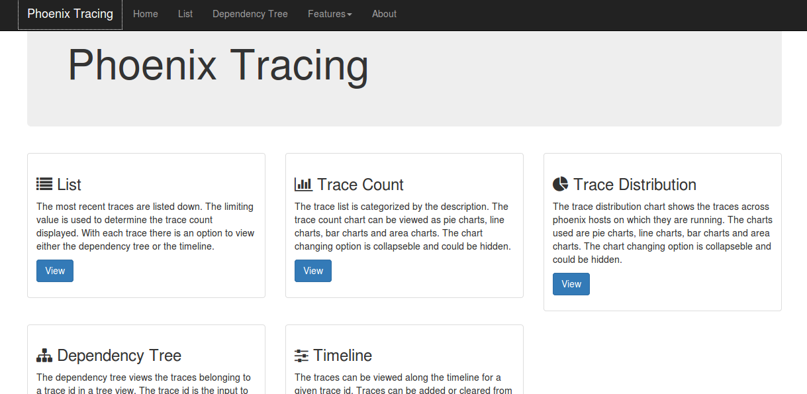
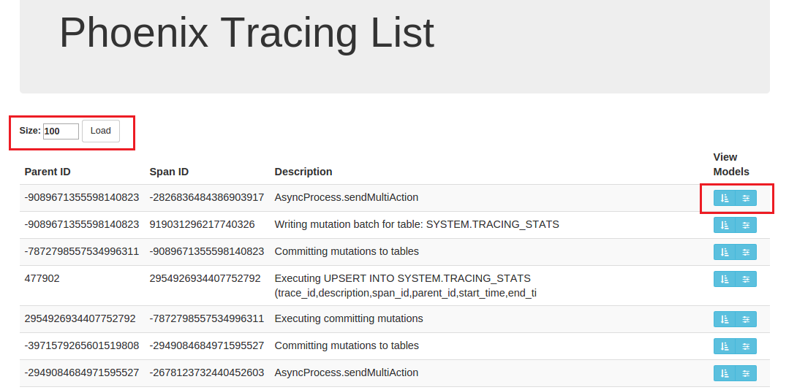
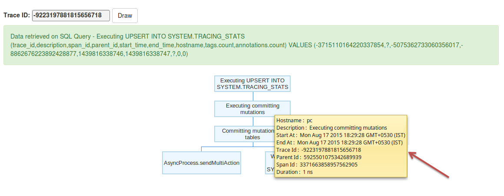
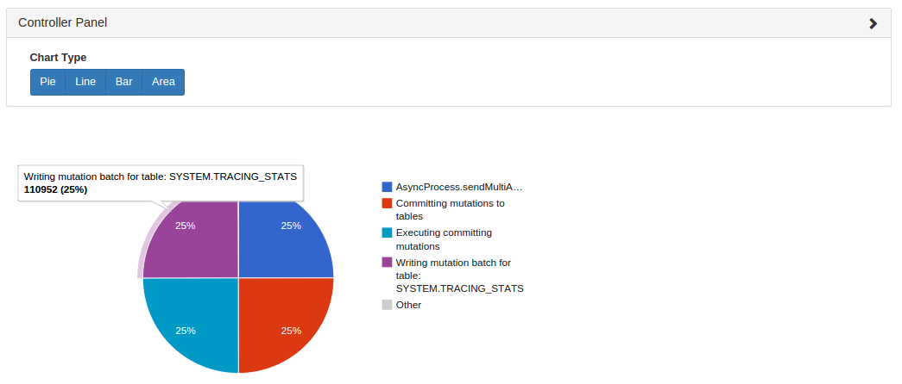
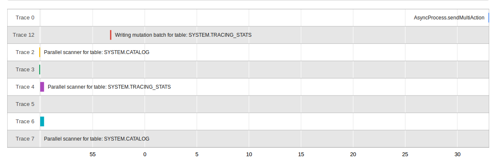

Tracing
As of Phoenix 4.1.0 we have added the ability to collect per-request traces. This allows you to see each important step in a query or insertion, all they way from the client through into the HBase side, and back again.
We leverage Cloudera's HTrace library to seamlessly integrate with HBase's tracing utilities. We then take it a step further by then depositing these metrics into a Hadoop metrics2 sink that writes them into a phoenix table.
Writing traces to a phoenix table is not supported on Hadoop1
Configuration
There are two key configuration files that you will need to update.
- hadoop-metrics2-phoenix.properties
- hadoop-metrics2-hbase.properties
They contain the properties you need to set on the client and server, respectively, as well as information on how the metrics2 system uses the configuation files.
Put these files on their respective classpaths and restart the process to pick-up the new configurations.
hadoop-metrics2-phoenix.properties
This file will configure the Hadoop Metrics2 system for Phoenix clients.
The default properties you should set are:
# Sample from all the sources every 10 seconds
*.period=10
# Write Traces to Phoenix
##########################
# ensure that we receive traces on the server
phoenix.sink.tracing.class=org.apache.phoenix.trace.PhoenixMetricsSink
# Tell the sink where to write the metrics
phoenix.sink.tracing.writer-class=org.apache.phoenix.trace.PhoenixTableMetricsWriter
# Only handle traces with a context of "tracing"
phoenix.sink.tracing.context=tracing
This enables standard Phoenix metrics sink (which collects the trace information) and writer (writes the traces to the Phoenix SYSTEM.TRACING_STATS table). You can modify this to set your own custom classes as well, if you have them.
See the properties file in the source (phoenix-hadop2-compat/bin) for more information on setting your own sinks and writer.
hadoop-metrics2-hbase.properties
HBase default deployment already comes with a metrics2 configuration, so the metrics2 configuration from phoenix can either replace the existing file (if you don't have any special configurations) or the properties can be copied to your exisiting metrics2 configuration file.
# ensure that we receive traces on the server
hbase.sink.tracing.class=org.apache.phoenix.trace.PhoenixMetricsSink
# Tell the sink where to write the metrics
hbase.sink.tracing.writer-class=org.apache.phoenix.trace.PhoenixTableMetricsWriter
# Only handle traces with a context of "tracing"
hbase.sink.tracing.context=tracing
They are essentially the same properties as in the hadoop-metrics2-phoenix.properties but prefixed by “hbase” rather than “phoenix” so they are loaded with the rest of the HBase metrics.
Disabling Tracing
You can disable tracing client requests merely by creating a new Connection that doesn't have the tracing property enabled (see below).
However, on the server-side once the metrics sink has been enabled you cannot turn of trace collection and writing unless you remove the Phoenix metrics2 confgiuration and bounce the regionserver. This is enforced by the metrics2 framework as its assumed that you will always want to collect information about the server you are running on.
Usage
There are only a couple small things you need to do to enable tracing a given request with Phoenix.
Client Property
The frequency of tracing is determined by the following client-side Phoenix property:
phoenix.trace.frequency
There are three possible tracing frequencies you can use:
- never
- This is the default
- always
- Every request will be traced
- probability
- take traces with a probabilistic frequency
- probability threshold is set by
phoenix.trace.probability.thresholdwith a default of 0.05 (5%).
As with other configuration properties, this property may be specified at JDBC connection time as a connection property. By turning one of these properties on, you turn on merely collecting the traces. However, the traces need to be deposited somewhere
Example:
# Enable tracing on every request
Properties props = new Properties();
props.setProperty("phoenix.trace.frequency", "always");
Connection conn = DriverManager.getConnection("jdbc:phoenix:localhost", props);
# Enable tracing on 50% of requests
props.setProperty("phoenix.trace.frequency", "probability");
props.setProperty("phoenix.trace.probability.threshold", 0.5)
Connection conn = DriverManager.getConnection("jdbc:phoenix:localhost", props);
hbase-site.xml
You can also enable tracing via hbase-site.xml. However, only “always” and “never” are currently supported.
<configuration>
<property>
<name>phoenix.trace.frequency</name>
<value>always</value>
</property>
</configuration>
Reading Traces
Once the traces are deposited into the tracing table, by default SYSTEM.TRACING_STATS, but it is configurable in the HBase configuration via:
<property>
<name>phoenix.trace.statsTableName</name>
<value><your custom tracing table name></value>
</property>
The tracing table is initialized via the ddl:
CREATE TABLE SYSTEM.TRACING_STATS (
trace_id BIGINT NOT NULL,
parent_id BIGINT NOT NULL,
span_id BIGINT NOT NULL,
description VARCHAR,
start_time BIGINT,
end_time BIGINT,
hostname VARCHAR,
tags.count SMALLINT,
annotations.count SMALLINT,
CONSTRAINT pk PRIMARY KEY (trace_id, parent_id, span_id)
)
The tracing table also contains a number of dynamic columns for each trace, identified by a unique trace-id (id of the request), parent-id (id of the parent span) and individual span-id (id of the individual segment), may have multiple tags and annotations about what happened during the trace. Once you have the number of tags and annotations, you can retrieve them the table with a request like:
SELECT <columns>
FROM SYSTEM.TRACING_STATS
WHERE trace_id = ?
AND parent_id = ?
ANd span_id = ?
where columns is either annotations.aX or tags.tX where X is the index of the dynamic column to lookup.
For more usage, look at our generic TraceReader which can programatically read a number of traces from the tracing results table.
Custom annotations can also be passed into Phoenix to be added to traces. Phoenix looks for connection properties whose names start with phoenix.annotation. and adds these as annotations to client-side traces. e.g. A connection property phoenix.annotation.myannotation=abc will result in annotations with key myannotation and value abc to be added to traces. Use this feature to link traces to other request identifiers in your system, such as user or session ids.
Phoenix Tracing Web Application
How to start the tracing web application
Enable tracing for Apache Phoenix as above
Start the web app
./bin/traceserver.py start
Open following address on a web browser http://localhost:8864/webapp/
Stop trace web app
./bin/traceserver.py stop
Changing the web app port number
Execute the command below
-Dphoenix.traceserver.http.port=8887
Feature List
The tracing web app for Apache Phoenix contains features list, dependency tree, trace count, trace distribution and timeline.

List
The most recent traces are listed down. The limiting value entered on the textbox is used to determine the trace count displayed. With each trace, there is a link to view either the dependency tree or the timeline.

Dependency Tree
The dependency tree views the traces belonging to a trace id in a tree view. The trace id is the input to the system. The parent child relationship of the traces can be viewed clearly. The tooltip gives the host name, parent id, span id,start time,end time, description and duration. Each node is collapsible and expandable. The SQL Query is viewed for each drawing of the tree. Clear is used to clear the tree from view.

Trace Count
The trace list is categorized by the description. The trace count chart can be viewed as pie charts, line charts, bar charts and area charts. The chart changing option is collapible and could be hidden.

Trace Distribution
The trace distribution chart shows the traces across phoenix hosts on which they are running. The charts used are pie charts, line charts, bar charts and area charts. The chart changing option is collapsible and could be hidden.
Timeline
The traces can be viewed along the time axis for a given trace id. Traces can be added or cleared from the timeline. There should be a minimum of two traces starting at two different times for the system to draw its timeline. This feature helps the user to easily compare execution times between traces and within the same trace.
